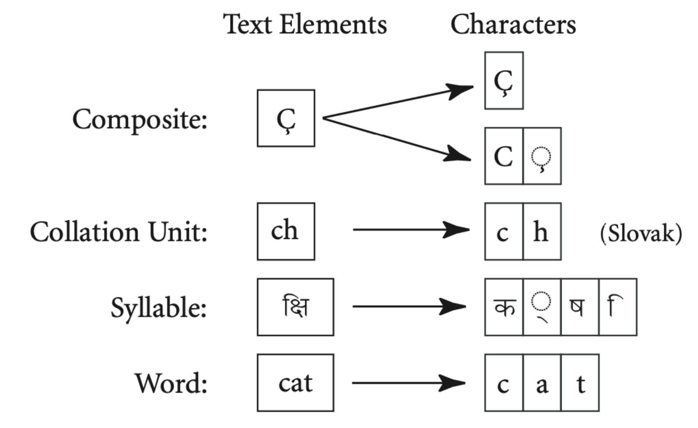
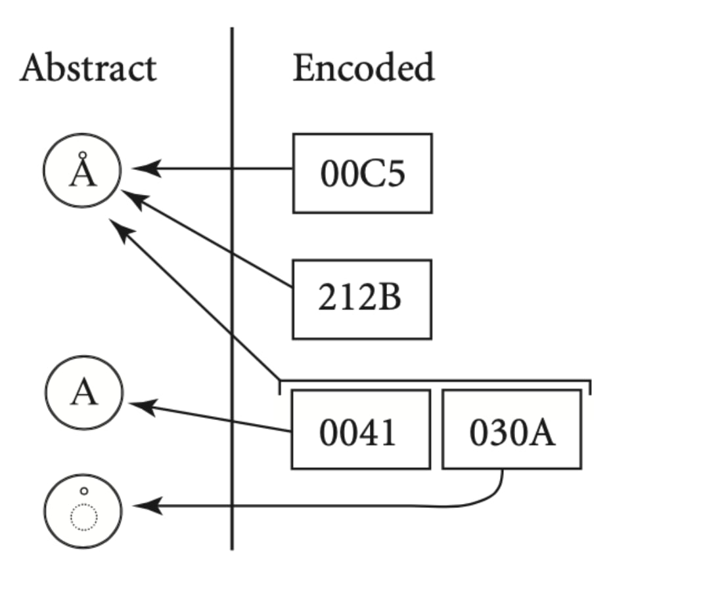
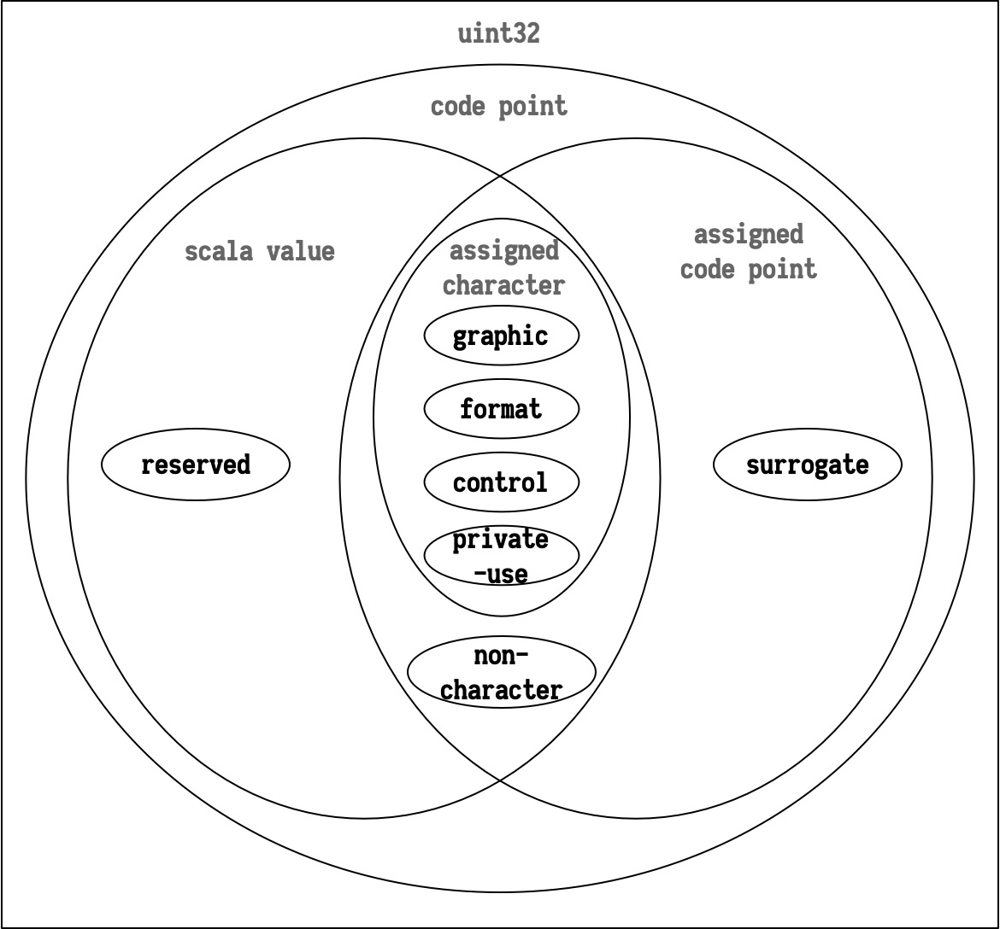
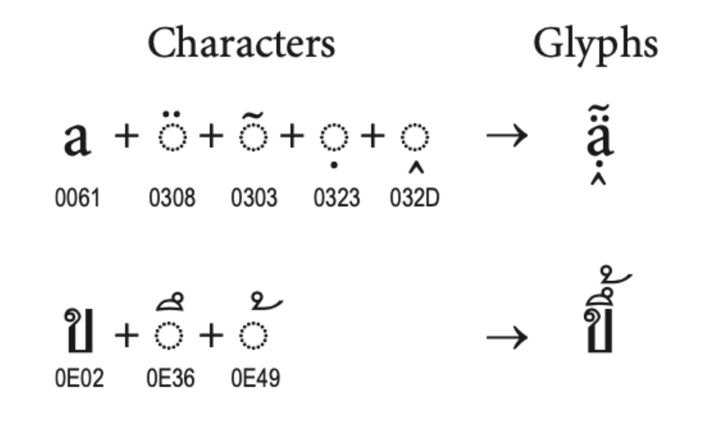
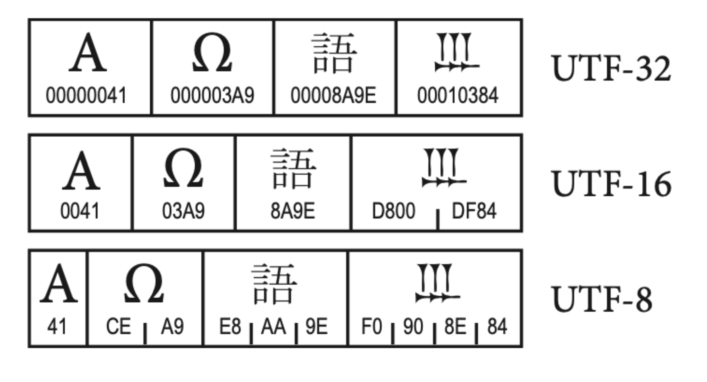
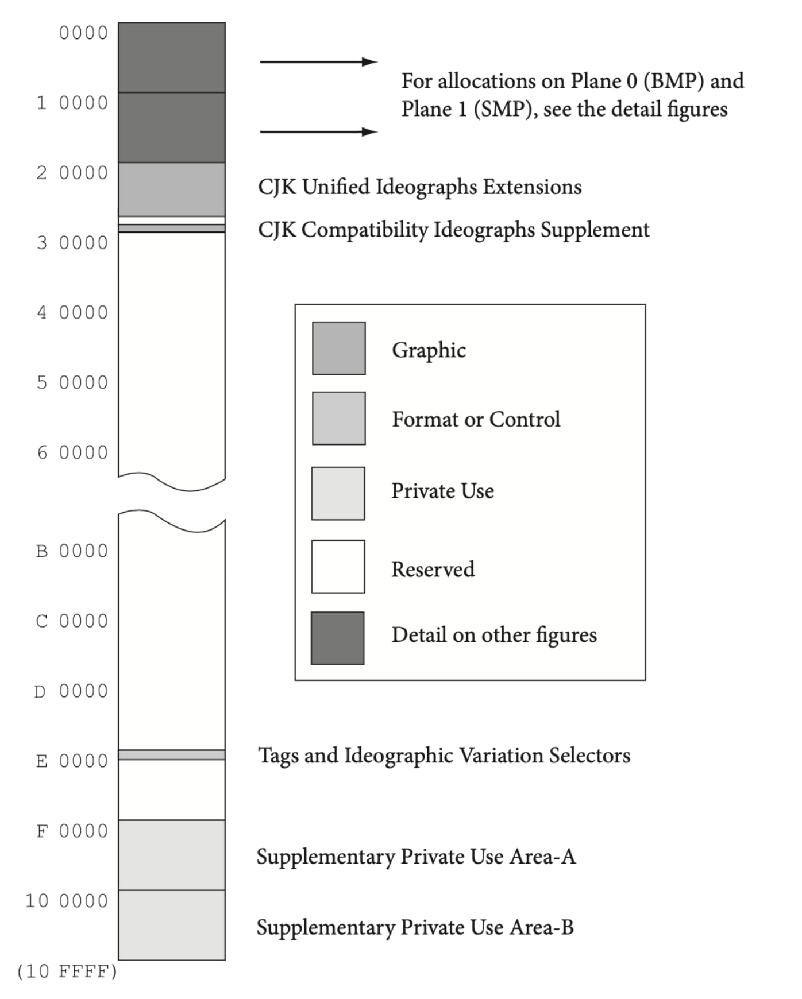

计算机只能处理二进制数字, 如果要处理文本, 就必须建立字符和二进制字节序列之间的关系. ASCII (American Standard Code for Information Interchange) 编码是基于拉丁字母的一套编码系统, 也是最简单的字符集 (character set), 它建立了字符和代码单元 (0 ~ 127 的整数) 之间的映射关系表. 例如 0110 0001 (97) 对应 'a', 0010 0100 (36) 对应 '$', 0010 1000 (40) 对应 '(' 等等.
ASCII 字符集很容易理解, 但问题是, 它能表示的字符数量太少了, ASCII 字符集只包括基本拉丁字母, 阿拉伯数字, 英式标点符号和少许控制字符. 要处理其他语言的文字, 一个字节显然是不够的, 各个国家逐渐开始出现了自己的编码标准. 例如, 中国制定了 GB2312 标准 (中国国家标准简体中文字符集), 使用两个字节 (16-bit) 表示字符, 收录了 6763 个汉字, 还包括拉丁字母, 希腊字母, 日文平假名及片假名字母, 俄语西里尔字母在内的 682 个其他字符. 后来又出现了 GBK (K 是 “扩展” 的拼音首字母) 和 GB18030 汉字字符集, 处理一些古汉语和罕用字. 日本 (Shift_JIS), 韩国 (Euc-kr) 等国家也都分别出现了自己的字符集. 然而, 这些字符集互相并不兼容, 甚至产生了冲突, 如何同时使用多国文字变成了一个难题.
在这种情况下, Unicode 联盟开始为了世界上大多数文字系统进行整理和编码, 创建了 Unicode 统一码规范. 与此同时, ISO 组织也在做同样的事情, 开展了 Universal Multiple-Octet Coded Character Set 项目, 简称 UCS. 很快, 双方发现了互相的存在, 并意识到世界上并不需要两套不同的通用字符集, 所以双方开始进行整合. 到 Unicode 2.0 为止, 二者的编码已经大部分做到一致了.
ASCII 字符集是一种简单字符集, 而 Unicode 字符集则非常的复杂, Unicode 规范 并不仅仅是一张扩充的 ASCII 表那么简单. 分配字符只是 Unicode 规范的一小部分, 该规范还包括大量的和文字处理相关的描述, 比如如何划分词语和断行, 处理不同地区的文字元素, 显示从右向左书写的文字等等, 它是一种现代字符集.
现代字符编码模型 (character encode model) 将字符字符编码的概念分为 : 有哪些字符, 它们的编号, 这些编号如何编码成一系列的码元 (有限大小的数字) 以及最后这些单元如何组成字节流若干问题. Unicode 字符编码模型被划为五个层次 :
اَلْعَرَبِيَّةُ), 卡纳达文 (ಕನ್ನಡ) 该如何从复杂的图案分解成简单的线性数据.本文并不是自顶向下对这五个层次逐一解析的 (甚至根本不会提到后两个层次), 但顺序基本是吻合的.
文本元素 (text element) 是用于创建单词和句子的基本文字表示, 如英语字母, 日语平假名, 汉语中的方块字等等. 如何将文本 (text) 分割为文本元素取决于具体的语言和文字处理程序, 英语中的 “A” 和 “a” 在渲染时是不同的文字元素, 但对于搜索程序来说有时却是相同的; 传统西班牙语排序程序中, “ll” 是一个文本元素, 位于 “l” 和 “m” 之间, 但在打字时则是两个分离的 “l”. 正因如此, 文本分段 (text segmentation) 非常的复杂, Unicode 规范避免对不同程序下的文本元素作出严格的定义, 取而代之定义的是更加底层的编码字, 一个文本元素可能由一或多个编码字组成.

编码字 (encoded character) 是 Unicode 规范的的核心概念, 一般来说字符 (character) 就是编码字的缩写, 它指的是抽象字和码点之间的映射关系. 其中, 抽象字 (abstract character) 是用于组织, 控制或表示文本数据的基本单位, 而码点 (code point) 或码位 (code position) 则是用于表示数据的整数, 编码字在二者之间建立的映射关系表正是 “字符集” 一词最原始的含义, 也是贯穿 Unicode 规范的核心.
但是, 和 ASCII 字符集不同, 编码字并非是双射 (bijection) 关系, 一个抽象字可能对应多种编码方式, 以 'Å' 为例, 码点 U+00C5 和 U+212B 都表示该字符, 而且它还拥有一个使用组合字 (combining character) 表示的形式, 由 U+0041 和 U+030A 两个码点表示.

码点 (code point) 是编码字之下的抽象层, 对于 Unicode 规范来说, 码点就是 0 ~ 10FFFF16 区间上的整数, 这个区间提供了 1,114,112 个码点, 被称为编码空间 (codespace).
码点有七种基本类型 (categories), 而每个分类下还有子分类 :
以上四类码点被称为分配字 (assigned character), 用于表示抽象字. 而接下来的三类则被 Unicode 用于一些特殊用途.
在更旧的 Unicode 版本中, 码点的分类和现在有较大不同, 使用正则表达式引擎时应尤其注意.
Unicode 标量值 (Unicode scalar value) 是指非 Surrogate 的码点, 后文会更详细的讨论这些概念.

组合字 (combining character) 附着于与之关联的基本字符, 渲染时与之共同参与对字形的描述. 上文中提到的 'Å' ("\u{0041}\u{030A}") 就是一个典型的组合字, 由 'A' ("\u{0041}") 和 '◌̊' ("\u{030A}") 组合而成. 组合字可以用于任何基本字符, 比如 'B' ("\u{0042}") 同样可以和 '◌̊' 组成 'B̊'.
注意, '◌̊' 中的 '◌' ("\u{25cc}") 符号并不是 ' ̊' 的一部分, 只是用于表示组合字的一种惯用手法, 显示该位置应有一个基本字符.
一个基本字符可被不止一个组合字附着, 诸如 'ạ̭̈̃' ("\u{0061}\u{0308}\u{0303}\u{0323}\u{032D}") 这样的情况都是被允许的行为.

接着我们接触一个附加概念, 一个在编码字抽象层次之上的概念: 字素簇. 字素簇 (grapheme cluster) 指人直觉和认知上所认为是单个字符的文本元素. 一个字位簇可能就是一个抽象字, 也可能由多个抽象字组成. 字素簇应当是文本操作的基本单位, 高级文本元素在分割时, 通常不会从一个字素簇中间拆分. 比如一个排版程序在自动换行时将 'Å' 的 'A' 和 '◌̊' 拆到了两行中, 这显然是不可容忍的行为. 再比如反转字符串 'ÅB' ("\u0041\u030A\u0042") 的时候, "\u0041\u030A" ('Å') 应整体和 'B' 交换位置, 得到 'BÅ' ("\u0042\u0041\u030A"), 而不该是简单的反转码位的排列, 得到 'B̊A' ("\u0041\u030A\u0042").
组合字是字素簇的重要组成成分, 但字素簇并非只用于确保组合字的完整性, 其划分和具体的语言的种类, 算法的选择都一定关系, 斯洛伐克 (Slovak) 语中的 "ch" 或赛萨拉 (Sisaala) 语中的 "ky" 都被视为一个独立的字素簇, 尽管它们确实由两个分离的字母组成.
Swift 的 String 类型默认以字位簇作为文本处理的基本单位.
let str = "\u{0041}\u{030A}\u{0042}"
str // "ÅB"
String(str.reversed()) // "BÅ"
Array(str) // ["Å", "B"]Java 如果直接使用 StringBuilder 的 reverse() 方法翻转字符串, 得到的结果是错的.
var str = "\u0041\u030A\u0042";
str; // "ÅB"
new StringBuilder(str).reverse(); // "B̊A"使用正则表达式可以缓解这个问题, 在正则表达式语法中, \X 用于表达字素簇, 而 \b{g} 用于表达字素簇的边界, 使用 .split("\\b{g}") 方法就能够正确的按照字素簇将字符串分割为字素簇数组了.
var str = "\u0041\u030A\u0042";
var cluster = str.split("\\b{g}"); // String[2] { "Å", "B" }接下里, 我们开始讨论码点的存储形式, 即 Unicode 代码单元和有限长度的码元序列之间的映射关系.
Unicode 规范包含三种不同的编码形式 (encode form): UTF-8, UTF-16 和 UTF-32 (UTF, Unicode/UCS transformation format), 分别使用 8-bit, 16-bit 和 32-bit 的码元 (code unit) 序列来存储码点 (code point) 信息. 这三种编码形式都能够表示 Unicode 规范中的所有编码字, 它们之间可以无损转换, 不会造成数据丢失.

在上图中可以看到, 由于 Unicode 码点 (code point) 对应 0 ~ 10FFFF16 区间上的整数 (共 1,114,111 个), 8-bit 和 16-bit 的码元无法直接容纳整个码点, 因此 UTF-8 和 UTF-16 采用的是不定长编码形式, 使用多个码元来表示一个码点.
32-bit 的码元可能容纳一个完整的码点, 因此 UTF-32 是一个定长的编码, 码点和码元一一对应. 它是最简单方便的编码形式, 下文不再赘述.
在正式开始介绍各种编码之前, 必须要了解 Unicode 对码点的管理策略. 码点是 0 ~ 10FFFF16 区间上的整数, 被划分为 17 个 65536 大小的平面 (plane), 部分分配情况如下 :
后续的 16 个平面被称为增补平面 (supplementary planes, SP), 这些码点超过了 U+FFFF, 超过了 UTF-16 码元的存储上限, UTF-16 使用两个码元来存储它们.

最初字符串的存储采用的都是定长的 2 字节方案, 但当符号超过 2 字节 65536 的容量上限后, 字符串就被迫转向了定长 4 字节编码, 然而这种编码方式直接导致字符串需要的存储空间翻倍, 并且绝大多数字符根本用不到那多出来的 2 字节. 在这种情况下, UTF-16 建立了变长编码, 使用 2 ~ 4 个字节 (1 ~ 2 个码元) 来表示码点. 代理区 (surrogate) 是一个 UTF-16 编码独有的概念, 是 D80016 ~ DFFF16 的码元区间, 包括高代理 (high-surrogate) 区 D80016 ~ DBFF16 和低代理 (low-surrogate) 区 DC0016 ~ DFFF16 两部分. 码元在代理区中意味着它需要另外一个码元连接形成代理对 (surrogate pair), 共同表示一个码点.
BMP 平面上的码点 (U+0000 ~ U+D7FF 及 U+E000 ~ U+FFFF, 不包括代理区) 可以直接用一个 UTF-16 码元表示, 无需代理对. 对于 U+10000 ~ U+10FFFF 上的码点, 情况会复杂一些, 转换的具体方法是 :
前导代理, 后尾代理, 和 BMP 中有效字符的码位互不重叠, 因此搜索程序的实现是简单的. 一个字符编码的一部分不可能与另一个字符编码的不同部分相重叠, 我们称之为自同步的 (self-synchronizing), 可以通过仅检查一个码元来判定给定字符的下一个字符的起始码元.
Java 中的字符串是 UTF-16 编码的, 这和 Java 早期选择的 UCS-2 编码有关, UCS-2 是一个定长编码, 当后来 UCS-2 无法表示 Unicode 字符时, 过渡到了兼容它的 UTF-16 成为了 Java 最自然的选择. 不过, 这同时也造成了 Java String 类的部分方法无法正确的处理变长编码. 在 Java 中, char (及对应包装类 Character) 类是一个 UTF-16 码元, 随机访问字符串所得到的自然也是码元, 是无意义的. 正确遍历 Java 字符串的方法是 :
for (int i = 0; i < str.length();) {
int c = str.codePointAt(i);
System.out.println(c);
i += Character.charCount(c);
}显然, Java 字符串的 .length() 方法返回的结果也不是码元数量, 而是码点数量. 很多较老的语言都有类似的问题, 它们无法很好的处理 BMP 平面以外的字符.
UTF-8 和 UTF-16 一样, 也是一种不定长编码形式, 它的码元更短, 为 8-bit, 使用 1 ~ 4 个码元来表示一个码点.
UTF-8 的具体编码算法十分简单, 按照下表将其比特序列顺次填入 X 所代表的空位即可.
| 码点起值 | 码点终值 | Byte 1 | Byte 2 | Byte 3 | Byte 4 |
|---|---|---|---|---|---|
U+0000 |
U+007F |
0XXXXXXX |
|||
U+0080 |
U+07FF |
110XXXXX |
10XXXXXX |
||
U+0800 |
U+FFFF |
1110XXXX |
10XXXXXX |
10XXXXXX |
|
U+10000 |
U+10FFFF |
11110XXX |
10XXXXXX |
10XXXXXX |
10XXXXXX |
ASCII 是 UTF-8 的一个子集, ASCII 字符串也同时是 UTF-8 字符串, 不需要转换.
Rust 的字符串 String (str) 就是 UTF-8 编码的, 其内部是一个 8-bit 无符号整数数组 Vec<u8>, 并且提供了两种迭代器: .chars() 逐码点迭代, .bytes() 逐码元迭代. Rust 在不借助 Unicode 库的情况下暂时还无法处理字素簇.
"🌊".chars().collect::<Vec<_>>() // ['🌊']
"🌊".bytes().collect::<Vec<_>>() // [240, 159, 140, 138]
"é".chars().collect::<Vec<_>>() // ['e', '\u{301}']Rust 标准库提供了一系列的字符串类型, 其中 OsString (OsStr) 是平台相关的, 也是 Path (PathBuf) 的内部实现. Windows API 中的字符串是 UTF-16 的, 并且部分未能正确的验证合法性, 当需要大量使用 Windows API 时, 应考虑该类型.
MySQL 字符编码集中有两套 UTF-8 编码实现: utf8 和 utf8mb4, 其中 utf8 一个码点最多占据 3 字节空间, 是一个过时的实现. 在 5.5 版本中, MySQL 推出了 utf8mb4, 并调整 utf8 为 utf8mb3 的别名, 以修正此遗留问题.
create table utf8mb4_table (
id int auto_increment primary key,
content varchar(255)
) default charset utf8mb4;